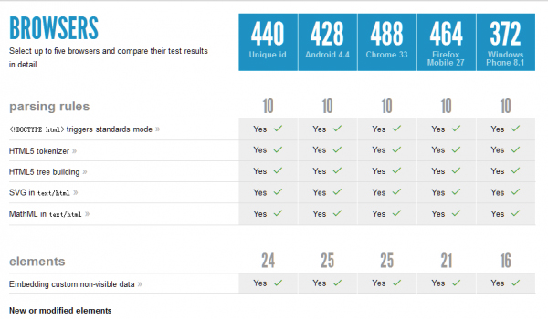
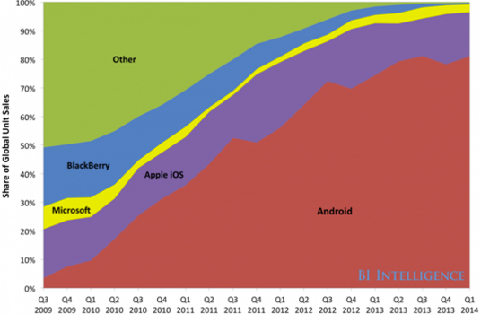
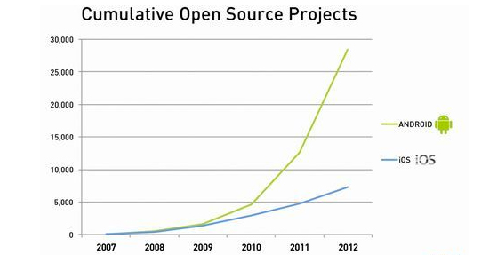
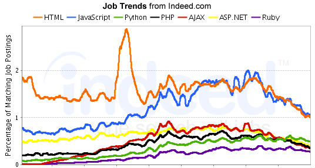

Sorry,你的浏览器不支持impress.js
请使用最新的Chrome, Safari 或者 Firefox浏览器
苹果在WWDC 2014上并未有推出新的硬件产品，不过从新发布的OS X Yosemite 和iOS 8，表明苹果公司正在试图改变保守的软件更新的状态。（iOS和OS X的打通，iOS 8中的iMessage、Family Sharing以及HomeKit）
在本届 WWDC 全球开发者大会接近尾声时，苹果公司专门针对开发人员公布全新的 Swift 编程语言。苹果公司称其拥有“快速、现代、安全、互动”等特性，并且要全面优于 Objective-C 语言。
Ⅰ、支持用户通过WiFi 打电话
Ⅱ、FaceTime 通话呼叫等待
Ⅲ、查看各App 的用电情况,高效地管理应用的耗能
Ⅳ、将焦点管控与曝光管控分开
乄、盲文键盘，大幅提升盲人群体的生活品质
来源：8 huge new features in iOS 8 that Apple didn't talk about today

在HTML5test.com的数据库中，新版本Safari得到的分数为440（满分为550），相比iOS 7中的Safari的412分来说还是有不小的提升，甚至还要比Android 4.4 KitKat原生浏览器的428分高出很多
来源：iOS 8 Safari scores 440 points on the HTML5 test, still lags behind Chrome

目前iPhone的平均价格比Android系统手机高达2000多元，目前从Android手机80%的市场份额来看，iPhone市场份额要超越Android比不容易。

根据对前几年的Android和iOS开源项目的整理分析，不难发现Android的开源项目数量和增长速度都要优于iOS。不知道 Swift 语言的出现，会不会改变这一现状。
苹果、三星占据了全球智能手机产业营收的50%以上,但苹果和三星却是遭遇专利诉讼最多的厂商。其中苹果从2009年至2013年共有191起诉讼排在第一位；三星以152起紧随其后，位列第二。
根据市场调研公司IDC本周二公布的数据称全球PC出货量持续下滑，预计2014年全球PC销量将会降至2.963亿台，相比较2013年将会下滑6%
用于人脸识别的JavaScript程序包是Face Detection
演示：http://www.webhek.com/demo/face-detection/
来源：http://www.webhek.com/face-detection/

目前各种编程语言和技术层出不穷，而作为一个合格的程序员，至少掌握了一种语言，但这是否就是企业所需要的呢？
马云在广州宣布12亿元人民币购买广州恒大足球俱乐部50％的股份，正式与许家印并列第一成为球队大股东。绿城老总称要率两万浙江球迷声讨马云“不爱浙江爱美人”，重利忘义，嫌贫爱富。
Thank You！
使用空格键或箭头键切换页面